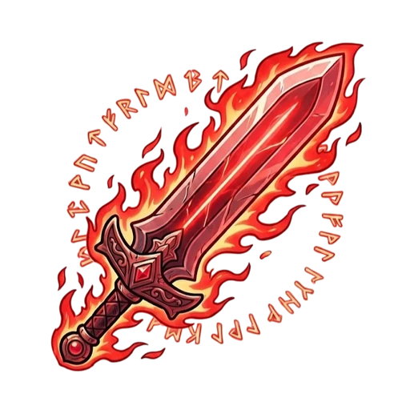
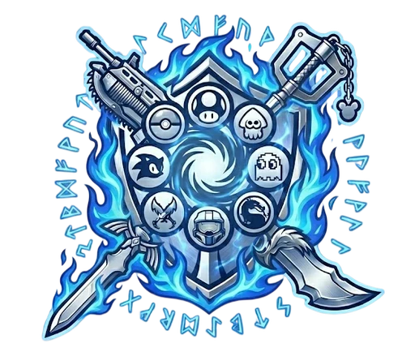
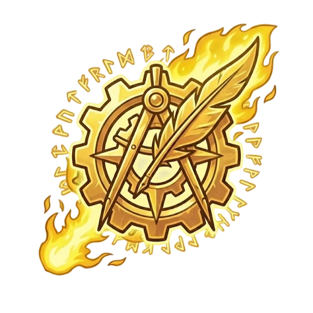
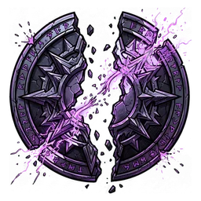
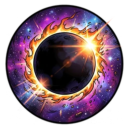
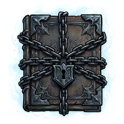
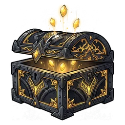
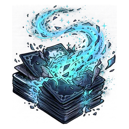
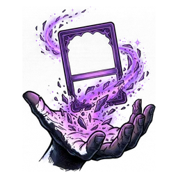
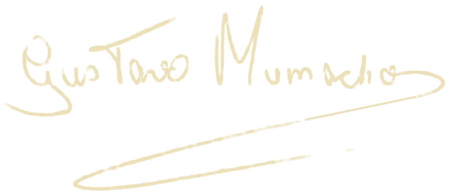

Jogo de cartas para 2 Jogadores. Cada carta é uma lenda dos videogames com um poder
único, o Grimório. Monte sua mão, escolha a hora certa de jogar cada lenda e resgate
5 prêmios antes do rival.
2Jogadores
103Lendas
6Linhagens
5Prêmios p/ vencer
Escolha o desafio

ATK

DEF

TECH
Jogue uma lendaCada Jogador escolhe uma lenda da mão, e as duas são reveladas juntas.
Smash!O maior valor vence e resgata um prêmio.
A Tríade de Essência
Os três atributos do jogo
Passe o mouse (ou toque) em um pilar para ver as 3 lendas mais fortes
naquele atributo e como as 103 se distribuem.
Aqui estão todas as lendas do Confluente. Escolha uma linhagem para conhecer o seu bônus ou procure uma lenda pelo nome. Clique (ou toque) em uma carta para abrir a ficha da lenda.
Clique em uma carta para ver a fichaToque em uma carta para ver a ficha
Nenhuma lenda encontrada neste filtro.
Linhagens da Alma
Cada lenda pertence a uma linhagem, e cada linhagem muda a forma de jogar. Escolha uma para ver como ela joga, quais são os seus pontos fortes e por que as suas lendas foram escolhidas.
Imagine que o multiverso era como uma teia gigante e perfeita. Cada fio dessa teia era um mundo diferente. De um lado, reinos cheios de magia e espadas; do outro, cidades de aço iluminadas por neon, ou até galáxias distantes perdidas no espaço.
Cada mundo vivia na sua própria bolha, em paz. Os heróis de um lugar nunca cruzavam o caminho dos vilões de outro. A regra era clara: cada um na sua realidade.
A Sombra do Olvido
Mas essa paz não durou para sempre. Das partes mais escuras e esquecidas do espaço, surgiu uma ameaça silenciosa: O Olvido. Ele não era um exército cheio de monstros ou um vilão com planos malignos. Era uma força vazia e faminta.
O Olvido não queria apenas destruir as coisas. O seu grande objetivo era apagar tudo da existência. Por onde ele passava, mundos inteiros simplesmente sumiam como se nunca tivessem existido. Cidades desapareciam sem deixar poeira e memórias de heróis viravam fumaça. O universo estava sendo devorado, caindo num vazio absoluto.
O Momento da Ruptura
Quando tudo parecia perdido e a última luz estava prestes a apagar, o multiverso reagiu. Num verdadeiro instinto de sobrevivência, a magia e a física entraram em colapso.
As barreiras invisíveis que separavam os mundos quebraram como vidro! Horizontes que nunca deveriam se cruzar bateram de frente. Reinos inteiros foram arrancados de seus lugares e jogados uns contra os outros no espaço. Foi o maior e mais caótico evento da história: A Convergência.
O Nascimento do Confluente
Dessa batida cósmica, sobrou um cenário impossível. No meio de toda a destruição, os pedaços dos mundos que sobreviveram se juntaram como um grande quebra-cabeça maluco. Esse novo lugar foi chamado de O Confluente.
Imagine só: castelos medievais flutuando em cima de desertos radioativos, e templos divinos caindo aos pedaços do lado de naves espaciais. Era a última ilha de vida no meio do nada.
O Legado de Sangue e Cinzas
A Convergência salvou o que restou, mas cobrou um preço alto. As maiores lendas dos games foram arrancadas de suas casas e de suas histórias.
Agora, presos nesse novo mundo bizarro, a única coisa que vale alguma coisa é a memória. Quem não luta, desaparece. Quem é esquecido, é engolido de vez pelo Olvido. A guerra não é mais por reinos ou coroas, mas para continuar existindo. E no meio dessa loucura, você e os outros Mestres entram em cena: é hora de invocar esses heróis e lutar para que eles nunca sejam apagados.
II
A Geografia do Impossível
O Horizonte Fragmentado
Esqueça qualquer mapa que você já viu. O Confluente não foi criado pela natureza. Ele nasceu da batida violenta de memórias e destinos. Imagine um mundo que funciona como um espelho quebrado. Cada caco é um pedaço de uma realidade que não existe mais. Tudo fica flutuando por causa de uma gravidade maluca.
Aqui, a lógica não existe. Você pode olhar para cima e ver um castelo gótico flutuante fazendo sombra numa avenida de asfalto rachado. Letreiros de neon brilham do lado de templos de deuses esquecidos. Cogumelos gigantes crescem nas carcaças de naves espaciais colossais. Rios de energia pura cortam esgotos de cidades tomadas pelo crime.
O Tempo Congelado
No Confluente, relógios são lixo. O sol pode ficar parado num eterno fim de tarde sobre um deserto mutante. Dando apenas dois passos, você pode entrar numa nevasca infinita caindo sobre ruínas tecnológicas. O tempo não passa. Ele pulsa.
As lendas dos games não envelhecem. A força de cada uma brilha ou apaga dependendo das vitórias na Arena. O próprio cenário muda de acordo com quem está pisando ali. Uma lenda muito poderosa pode fazer o ambiente ao redor se transformar para lembrar o seu mundo de origem só por estar presente.
A Arena do Nexo: O Olho do Furacão
Bem no meio desse caos maluco fica a Arena do Nexo. É o ponto exato onde todas as energias do multiverso se cruzam. Esse é o lugar mais sagrado e perigoso de toda a existência.
A Arena do Nexo não é um palco normal de luta. Ela é viva. O chão e as paredes mudam de acordo com os lutadores. Se dois Soberanos se enfrentam, as pedras brilham com luz sagrada. Se as Forças das Trevas dominam o campo, o solo fica frio e assustador.
Essa Arena não foi feita para diversão. Ela foi feita para sobrevivência. É o único lugar onde o poder de uma lenda é testado ao limite, sem nenhuma proteção do seu mundo natal.
A Lei da Sobrevivência
Mas por que essas lendas continuam lutando? No Confluente, a resposta é simples: para não sumir.
Nesse mundo quebrado, você só existe se for lembrado. Enquanto um herói ou vilão tiver forças para lutar e vencer, ele continua real. Se alguém aceita a derrota ou desiste de tentar, o Olvido engole essa pessoa na mesma hora.
Lutar na Arena do Nexo é a única forma de provar o seu valor. Cada golpe e cada habilidade ativada é um grito para o universo dizendo: "Eu ainda estou aqui! Eu ainda existo!". Ser nocauteado significa ser jogado para o esquecimento. Vencer é garantir que a sua história continue viva por mais um dia.
Aqui, o chão é feito de memórias antigas. O ar que se respira é feito de pura força de vontade. Não pare de lutar. Se você parar, vira só mais uma sombra perdida nas ruínas do tempo.
III
O Tecelão de Destinos
A Âncora no Meio do Caos
Depois da Convergência, as grandes lendas viraram apenas sombras. Sem os seus mundos originais, elas flutuam pelo Confluente como fantasmas ou memórias vivas. Sozinhas, elas não têm força física para enfrentar o Olvido. São como pequenas chamas prestes a apagar no meio de uma tempestade.
Para ganharem vida de verdade, elas precisam de um farol. Elas precisam de você.
Você é o Mestre de Deck, também conhecido como o Tecelão de Destinos. No meio de toda essa loucura do multiverso, você é a âncora. A sua força de vontade é o que dá peso às espadas, fôlego aos pulmões e realidade aos feitiços. Sem você, esses heróis são apenas sussurros no vazio. Com você, eles viram verdadeiros deuses na Arena.
O Dom da Sincronia
Não é qualquer um que consegue andar pelo Confluente. Ser um Mestre de Deck exige um dom muito raro. É a capacidade de sintonizar a sua mente com a energia das almas perdidas. Quando você segura uma carta do Smash Deck, você não está tocando apenas em papel e tinta. Você está criando uma ponte mental com a essência de um guerreiro.
Essa conexão mágica é o que permite visualizar estratégias de combate incríveis. Você não apenas joga uma carta na mesa. Você puxa uma lenda direto do Limbo e divide a sua própria energia com ela para que possa lutar mais uma vez.
O Cofre de Almas: O Seu Deck
O seu baralho não é um simples monte de cartas. Ele é o seu artefato mais valioso. Ele funciona como um cofre mágico. É ali que as memórias e os poderes das lendas ficam protegidos contra a força do esquecimento.
Cada carta é um contrato de lealdade fechado com a própria realidade. No momento em que uma carta é jogada na Arena, acontece um verdadeiro grito de guerra dimensional. É o som de uma história inteira sendo reescrita num segundo. O impacto desse chamado faz as paredes do Nexo tremerem.
O Peso do Legado
Ser um Mestre de Deck é uma honra, mas também é um peso gigantesco. Você não busca apenas ganhar partidas e fama. Você é o último guardião da história de mundos que não existem mais. Se você falhar, se a sua vontade quebrar ou se o seu baralho acabar, a ligação se rompe.
Quando um Mestre perde a sua conexão, as lendas que ele comandava são engolidas pelo esquecimento para sempre. Por isso, cada duelo na Arena do Nexo é uma luta real pela sobrevivência. Você não está apenas jogando um jogo. Você está garantindo que o legado do Mario, a fúria do Kratos e a mira do Arthur Morgan nunca sumam da existência.
O baralho nas suas mãos carrega o peso de mil mundos. Escolha os seus aliados com sabedoria. Afinal, você é a única coisa que separa todos eles do nada absoluto.
IV
O Legado Final
A Luta Sem Fim
No Confluente, a paz não existe. Se o combate parar, é porque o esquecimento venceu. A batalha no Smash Deck é um ciclo eterno, uma dança mortal entre a luz e a sombra, o aço e a magia. Enquanto existir uma lenda com vontade de lutar e um Mestre com coragem para guiar, o universo estará a salvo.
A Convergência não foi um evento isolado que já passou. Ela é um pulso constante. A cada nova batida do coração do multiverso, novos heróis são puxados dos seus mundos direto para o Nexo. Reinos que antes eram apenas lendas perdidas ressurgem das cinzas, trazendo novos perigos, novos segredos e glórias inéditas.
A Ascensão do Guardião
O seu caminho como Mestre de Deck está apenas começando. A Arena não exige apenas força bruta. Ela exige Equilíbrio. Para se tornar o Supremo Guardião do Confluente, você precisa ir além de uma única facção.
Colecione as Lendas: Resgate as almas perdidas das garras do Olvido e dê a elas um novo lar seguro no seu baralho.
Domine as Linhagens: Entenda a fúria dos Soberanos, a ambição das Trevas e a técnica dos Mestres. Sinta a garra dos Sentinelas, a lealdade do Crime e a loucura do Caos.
Escreva sua História: Cada duelo vencido é uma nova linha gravada para sempre nas paredes de cristal da Arena do Nexo.
O Novo Capítulo
Nesse domínio, o fim é apenas uma transição. As realidades antigas podem ter caído, mas a vontade de lutar continua intacta. Você segura nas suas mãos o futuro de mil eras. O poder de decidir quais histórias merecem durar para sempre é totalmente seu.
Prepare o seu espírito, sintonize as suas cartas e aceite o seu destino. A Arena está pronta. As lendas estão aguardando. E, acima de tudo, lembre-se da lei mais absoluta deste novo mundo:
No Nexo, as histórias nunca terminam. Elas apenas ganham um novo capítulo.
Gustavo Menacho — Arquiteto do Confluente
O Ritual do Nexo
Manual do Jogador
Tudo o que um Jogador precisa para entrar na Arena: a carta, a preparação, o turno, a conta do Poder Astral e como a partida termina.
2 Jogadores
50 cartas cada
5 prêmios no Relicário
média de 7 a 8 turnos por partida
Regras em 1 minuto
Objetivo. Resgate os 5 prêmios do seu Relicário antes do rival. Ver detalhes
Preparação. Cada Jogador tem 50 cartas: 5 na mão, 5 no Relicário (os prêmios) e 40 no baralho. Ver detalhes
Turno. Os dois compram 2 cartas, o Atacante escolhe o desafio (ATK, DEF ou TECH) e cada um revela 1 lenda da mão. Ver detalhes
Smash! Vence o maior Poder Astral (valor da carta + Bônus de Classe + Grimório). O perdedor vai para o Abismo e o vencedor resgata 1 prêmio. Ver detalhes
1
Anatomia da Carta
Cada carta é um Contrato de Lealdade e um receptáculo para a essência de um herói. Toque nos pontos de brilho (ou nos textos ao lado) para destacar cada parte.
Selo de Classe
Fica no topo da carta e identifica a Linhagem da alma da lenda: Soberanos, Trevas, Combate, Sentinelas, Crime ou Caos. Não é só enfeite: indica qual Aura de Classe (bônus passivo) será somada ao Poder Astral durante o confronto.
Círculo de Prioridade
É a Velocidade de Reação da lenda, de I a IV. Determina a ordem em que as habilidades se manifestam: quem tem a prioridade mais alta (mais perto de I) molda a realidade antes do oponente.
Tríade de Essência
Os três valores puros que regem toda alma na Arena:
ATK Ataque: força bruta e vontade ofensiva.
DEF Defesa: resiliência espiritual para suportar impactos.
TECH Técnica: inteligência, perícia e habilidades mágicas.
Grimório
O compartimento inferior guarda o Efeito Especial único da lenda: a memória viva de uma grande façanha. Quando ativado, pode distorcer as regras, aplicar Estigmas ou conceder bônus temporários.
2
O Ritual de Preparação
Antes de as lendas colidirem, cada Jogador ancora a sua presença na Arena.
O Ritual das 103. As 103 lendas se dividem: 50 cartas para cada Jogador e as 3 restantes ficam de fora da partida, nas margens do Olvido, longe de qualquer Jogador.
Mão inicial. Compre as 5 primeiras cartas do topo do baralho. É a sua mão de combate.
O Relicário. Coloque as 5 cartas seguintes viradas para baixo. São os seus prêmios: a sua persistência. Não são cartas extras: saem do seu próprio baralho de 50.
A Iniciativa. Um sorteio decide quem é o Atacante (propõe o desafio) e quem é o Guardião (defende a realidade do Nexo).
A conta das 50 cartas
5na mão+5no Relicárioos prêmios+40no baralho=50cartas suas
Os prêmios são cartas suas. Eles são separados do seu próprio baralho na preparação e ficam virados para baixo.
Ao vencer um Smash!, você vira a carta do topo do Relicário e a coloca na mão. É assim que um prêmio vira uma carta jogável.
Ao resgatar os 5 prêmios, você vence a partida.
As 3 cartas que sobram da divisão (103 − 50 − 50) são outra coisa: ficam fora da partida e não viram prêmio de ninguém.
Relicário5 prêmios (viradas para baixo)
Arenaonde as lendas colidem
Abismovazio no início
Mão5 cartas iniciais (limite: 7)
Baralho50 cartas
3
O Fluxo do Turno
O tempo no Nexo pulsa em ciclos. Em cada turno, um Jogador ataca e o outro guarda; no fim, os papéis se invertem.
Fase 1 Fase de Dádiva
Os dois Jogadores compram 2 cartas.
Limite de Persistência: a mão aguenta no máximo 7 cartas. O excedente vai para o Abismo, à sua escolha.
Fase 2 O Desafio
O Atacante escolhe uma das três forças: ATKDEF ou TECH.
A decisão obriga o Guardião a responder na mesma frequência, testando a especialidade da sua lenda.
SMASH!
Fase 3 O Embate (Smash!)
Cada Jogador escolhe 1 lenda da mão e as duas são reveladas ao mesmo tempo.
O impacto desperta os Grimórios e prepara o cálculo do Poder Astral.
⇄
Fim do turno Os papéis se invertem
Quem foi Atacante vira Guardião, e vice-versa. Assim os dois escolhem o atributo em turnos alternados.
4
O Julgamento do Poder Astral
Depois do Smash!, é hora dos números. Siga esta ordem para nenhum efeito ser ignorado.
Marcadores. Estigmas e redutores deixados por um turno anterior entram na lenda (ex.: ela nasce Obscurecida).
Supressão. Os Grimórios que anulam outros agem primeiro, em ordem de Prioridade. Um Grimório anulado não faz nada neste Smash!.
Execução. Os Grimórios restantes agem por Prioridade: I, II, III, IV. Se as duas lendas têm a mesma, o Guardião age primeiro. Eles mudam o desafio, aplicam estigmas e somam ou reduzem valores.
Cálculo. Soma-se o valor do atributo (já com os redutores), o Bônus de Classe e os modificadores de habilidade.
Vencedor. O maior Poder Astral vence (ou a vitória automática de um Grimório, se houver).
Consequências. Descartes, compras e marcadores que o Grimório causa depois do Smash!.
Valor Baseda carta+Bônusde Classe+Modificadoresde Habilidade=PoderAstral
Exemplo Astral: Mario no desafio de ATK
0Base de ATK+0Soberano+0Bloco Surpresa=0Poder Astral
Aura de cada classe
Soberanos+5 em ATK, DEF e TECH
Trevas+10 em ATK
Combate+10 em TECH
Sentinelas+10 em DEF
Crime+5 em ATK +15 contra Soberanos, Sentinelas e Trevas
Caos+10 em TECH imune ao Desvinculado
Quem vence o Smash!
Vitória. Maior Poder Astral vence. O perdedor é banido para o Abismo; o vencedor resgata 1 prêmio do Relicário (a carta vai para a sua mão) e a sua lenda volta à mão.
Desempate por Essência. Poder Astral idêntico? Vence quem tem o maior valor impresso na carta para o atributo.
Aniquilação Mútua. Até o valor impresso é igual? As duas lendas vão para o Abismo e ninguém resgata prêmio (salvo por efeito de Grimório, como o de Rayman).
5
Estigmas
Durante o conflito, habilidades do Grimório podem impor condições de corrupção.

Desvinculado
A lenda perde a conexão com a própria linhagem e anula qualquer Bônus de Classe. Só a classe Caos é imune.
Ver em detalhe →

Eclipsado
A percepção do Jogador se obscurece: ele não escolhe o atributo no próximo ataque que fizer. Quem escolhe é o oponente.
Ver em detalhe →

Obscurecido
O acesso às memórias da lenda é bloqueado e o seu Grimório é anulado.
Ver em detalhe →
Marcador: estigma que vem de "se vencer" ou "se perder" cai na próxima lenda do Jogador atingido. Exemplo: Bowser perde em DEF e vai para o Abismo; a próxima lenda do rival entra com −20 de ATK.
Transição de Zona: ao sair da Arena (para o Abismo ou para a mão), a lenda fica limpa. Só o Eclipsado continua, porque atinge o Jogador. Exemplo: uma lenda Obscurecida que vence volta para a mão, e na próxima vez o Grimório dela funciona.
6
Condições de Vitória
O duelo termina na hora em que um Jogador alcança um destes objetivos, ou sucumbe a uma destas falhas.

Resgate de Persistência
O primeiro Jogador a resgatar os 5 prêmios do seu Relicário, vencendo combates, é declarado vencedor absoluto.
Ver em detalhe →

Exaustão Existencial
A energia é finita. Se o seu baralho estiver vazio na hora de comprar, o elo se quebra e você é tragado pelo Olvido.
Ver em detalhe →

Desolação na Arena
Se for chamado ao Embate sem nenhuma carta na mão para lutar, você é consumido pela desolação e derrotado.
Ver em detalhe →
A lenda perde a conexão com a própria linhagem: o Bônus de Classe não conta no Poder Astral.
Como funciona
No cálculo do Poder Astral, a lenda Desvinculada soma só o valor da carta e os efeitos de Grimório. O Bônus de Classe (a Aura da linhagem) é ignorado. Exemplo: um Soberano perde o +5; um Mestre do Combate perde o +10 em TECH.
Quem é imune
A classe Caos e Magia. A magia dela não depende da linhagem, então o Desvinculado não tem efeito sobre essas lendas.
Lendas que aplicam
Angry Bird (Red), Sonic, Ganondorf, Nemesis, Kazuya Mishima, Strider Hiryu, Marcus Holloway, Dovahkiin e Yennefer.
Como acaba
Quando a lenda sai da Arena (vai para o Abismo ou volta para a mão), o estigma é limpo. Se ele veio de um efeito "se vencer" ou "se perder", vira um marcador ao lado do Jogador e cai sobre a próxima lenda que ele jogar.
O único estigma que atinge o Jogador, e não a lenda: no seu próximo ataque, quem escolhe o atributo é o oponente.
Como funciona
Normalmente o Atacante escolhe o desafio (ATK, DEF ou TECH). Eclipsado, você perde essa escolha no seu próximo ataque: o oponente decide o atributo, e é claro que vai escolher o seu ponto mais fraco.
Lendas que aplicam
Akuma (ao vencer em ATK), M. Bison (ao vencer), Isaac Clarke (ao perder), Ratchet e Geralt of Rivia (que escolhe entre Eclipsado e Obscurecido).
Como acaba
Como recai sobre o Jogador, ele não é limpo quando a lenda sai da Arena. Fica um marcador ao lado do Jogador até o efeito se cumprir no próximo ataque dele.
Dica
Se você está Eclipsado, guarde para esse turno uma lenda equilibrada, sem um atributo muito baixo.
As memórias da lenda são bloqueadas: o Grimório dela é anulado e ela luta só com os próprios atributos.
Como funciona
A lenda Obscurecida não ativa o seu Grimório (o efeito especial impresso na carta). O Poder Astral dela é o valor do atributo mais o Bônus de Classe, sem nenhum efeito extra.
Quem é imune
Sora: guiado pela luz, o portador da chave é imune ao Obscurecido na Arena.
Lendas que aplicam
Sigma, Iori Yagami, Ryu Hayabusa, Alan Wake, Solid Snake, Aiden Pearce, Wrench e Geralt of Rivia (que escolhe entre Obscurecido e Eclipsado).
Como acaba
É limpo quando a lenda sai da Arena. Se veio como marcador de um efeito "se vencer" ou "se perder", a próxima lenda do Jogador atingido já nasce Obscurecida.
A forma de vencer: resgatar os 5 prêmios do seu Relicário antes do rival.
Como funciona
Na preparação, cada Jogador separa 5 cartas do próprio baralho, viradas para baixo: é o Relicário. Cada vez que você vence um Smash!, vira a carta do topo do Relicário e a coloca na mão. A sua lenda vencedora também volta para a mão.
Quando não há resgate
Na Aniquilação Mútua (empate até no valor impresso), as duas lendas vão para o Abismo e ninguém resgata prêmio, salvo efeito de Grimório.
Reservas
Os prêmios que você já resgatou são as suas Reservas. Estar atrás nelas é o gatilho de virada de lendas como Heihachi Mishima e Jin Kazama.
Na prática
Uma partida costuma durar de 7 a 8 turnos. Cada prêmio resgatado é uma carta a mais na mão, ou seja, vencer também deixa você mais forte para o próximo Smash!.
A energia é finita: se não houver carta para comprar na hora obrigatória, você é tragado pelo Olvido.
Como funciona
A Exaustão só acontece na compra obrigatória da Fase de Dádiva, no início de cada turno. Se o seu baralho estiver vazio nesse momento, você perde a partida.
O que não causa Exaustão
Compras extras pedidas por um Grimório com o baralho vazio simplesmente falham, sem derrota.
Quando aparece
É rara: depois da preparação o baralho tem 40 cartas, e as partidas terminam em cerca de 7 a 8 turnos. Ela quase só surge quando o rival gasta o seu baralho com efeitos como os de Goro e Dante, que mandam a carta do topo do seu baralho para o Abismo.
Sem nenhuma carta na mão quando é chamado ao Embate, você é consumido pela desolação e derrotado.
Como funciona
As lendas do Embate saem sempre da mão. Se chegar a hora de jogar e a sua mão estiver vazia, não há quem lute por você, e a partida termina com a sua derrota.
O que não causa Desolação
Um Grimório que manda descartar com a mão vazia simplesmente falha. A derrota só vem quando você é chamado ao Embate sem carta.
Quando aparece
Também é rara. Ela surge quando o rival esvazia a sua mão com efeitos como os de Bomberman, Donkey Kong e Morrigan, que fazem você perder cartas da mão.
7
Dúvidas e Glossário
Os casos que costumam aparecer na primeira partida e, logo abaixo, o que significam os termos dos Grimórios.
Quem ataca depois do primeiro turno?
Os papéis se alternam a cada turno. Se você atacou no turno 1, é o Guardião no turno 2, e assim por diante. O sorteio só decide quem começa.
Quem compra cartas, e quando?
Os dois Jogadores, 2 cartas cada, no início de todo turno, inclusive o primeiro (5 da mão inicial + 2 = 7, exatamente o limite).
E se eu ficar com mais de 7 cartas?
O limite vale na Fase de Dádiva: depois de comprar, quem passar de 7 envia o excedente ao Abismo, escolhendo quais cartas. É de propósito: o Abismo cheio alimenta várias habilidades.
De onde saem as lendas do Embate?
Sempre da mão. As cartas do Relicário são prêmios virados para baixo: só entram na mão quando você as resgata.
O que acontece com as duas cartas depois do Smash!?
A lenda perdedora vai para o Abismo. A vencedora volta para a mão. Se o efeito dela dura até o turno seguinte, ela fica deitada na mesa como lembrete e só volta à mão quando o efeito se cumprir.
O que é "resgatar" um prêmio?
Ao vencer um Smash!, você vira a carta do topo do seu Relicário e a coloca na mão. Quando o Relicário esvaziar por vitórias (5 resgates), você vence a partida.
Quando acontece a Exaustão ou a Desolação?
São redes de segurança, raras. Como as partidas terminam em cerca de 7 a 8 turnos e o baralho tem 40 cartas após a preparação, elas quase só aparecem por efeitos de Grimório (como descartar o topo do baralho de alguém ou esvaziar a mão).
E se um Grimório pedir uma carta que não existe?
Nada acontece. Compra extra com o baralho vazio, descarte com a mão vazia ou resgate de um Abismo vazio simplesmente falham. A Exaustão só vale na compra obrigatória da Fase de Dádiva.
O que acontece quando um Grimório me deixa Eclipsado ou com marcador?
O marcador fica ao lado de você até se cumprir. O Eclipsado cumpre no seu próximo ataque (o rival escolhe o atributo); o "-20" e os estigmas valem para a próxima lenda que você jogar; o "Mestre de Almas escolhe o atributo" de Tommy Vercetti vale no começo do turno seguinte.
Rayman volta mesmo da derrota?
Sim. Rayman é imune ao Abismo no Embate: se perder (ou for aniquilado), o rival resgata o prêmio e Rayman volta para a sua mão.
As 3 cartas que sobram na divisão podem voltar ao jogo?
Não. Elas ficam fora da partida, nas margens do Olvido, e não contam como cartas do Abismo de nenhum Jogador. O Abismo de cada Jogador começa vazio.
Glossário: termos que os Grimórios usam
"Luta com…": quando a lenda usa outro atributo
Algumas lendas, em certos desafios, lutam com outro atributo: Ridley luta com o ATK quando o desafio é DEF; Leon, Chun-Li, Marcus Fenix e Vito lutam com a DEF quando o desafio é ATK; Spyro luta com o ATK quando o desafio é TECH. Nesse caso valem o valor base e o Bônus de Classe daquele atributo.
O que são "Reservas"?
São os prêmios que você já resgatou. Ter menos Reservas que o rival significa estar atrás na corrida, e é o gatilho de virada de Heihachi e Jin.
Redutores e imunidades
Um redutor tira pontos de um atributo (como -20). Chris, Kiryu e Alucard (em DEF) ignoram redutores. Steve e Master Chief também, a não ser que o valor impresso do rival no atributo seja maior que 95. Redutores só pesam no atributo que está em disputa.
O que é um "efeito matemático"?
Tudo o que mexe nos números do duelo: bônus, redutores, trocas e cópias de valor, ignorar ou roubar o Bônus de Classe. Estigmas, anulações, descartes e compras não são matemáticos. Alucard (em DEF) e Arthur Morgan anulam os efeitos matemáticos do Grimório rival.
Como funcionam as Cópias
Copiar nunca piora quem copia: Mega Man, Metal Sonic e Joker só ficam com o valor copiado se ele for maior. Kirby copia o Grimório inteiro do rival. Se duas habilidades de Cópia (Kirby, Mega Man, Metal Sonic, Sackboy) se encontram, as duas ficam inertes.
Quem age antes da Prioridade?
V age antes de todos. Solid Snake age antes de um rival de Prioridade II, e Agent 47 passa a agir na Prioridade I quando o desafio é TECH. A ordem é fixada na revelação das cartas.
Moeda, Vitória Automática e Nocaute
A moeda dá cara ou coroa com a mesma chance. Vitória Automática (Alan Wake, Aku Aku) e Nocaute (Cuphead e Mugman na coroa) decidem o Smash! na hora, sem olhar o Poder Astral. O vencedor resgata o prêmio normalmente.
Atributos que mudam no meio do Smash!
Fox, Samus e Amaterasu trocam o atributo do desafio. Se duas lendas trocam, vale a que age por último. O Nemesis anula essas fugas (e Rayman, Dutch) e ainda aplica Desvinculado.
Pronto para jogar?
Escolha suas lendas no Códice e leve as regras com você: o Livro de Regras completo, em PDF, para ler na tela do computador, do celular ou do tablet.
Uma vitrine de ideias: os artefatos que o Smash Deck poderia ter no mundo físico. Nada aqui está à venda. É um estudo de design de produto, feito para um projeto de fã sem fins comerciais.
Créditos e Legado
O Arquiteto
O Smash Deck TCG não é só um conjunto de regras. É o resultado de um desafio pessoal: unir décadas de cultura pop em um sistema de combate ágil, técnico e visualmente marcante.
103lendas
412Manifestações da Essência
36páginas no Livro de Regras
0frameworks
Quem está por trás
Gustavo Menacho
Desenvolvedor Front-End e Ex-Analista Jurídico
De Leis a Algoritmos
Fui Analista Jurídico, focado em contratos B2B e compliance. O Direito me ensinou a interpretar regras com rigor e a prever riscos antes que aconteçam, exatamente o que o desenvolvimento de software pede. Mudei de plataforma, não de raciocínio: as regras de conduta viraram regras de negócio.
O projeto: Smash Deck TCG
A vivência no universo gamer e como criador de conteúdo virou o meu principal projeto: uma Single Page Application em JavaScript puro, HTML semântico e CSS, sem frameworks, com cartas em 3D, partículas que reagem ao mouse e a carta que "voa" do Códice até a ficha.
O jogo, as regras, os textos e as decisões de design são meus. As ilustrações foram geradas com IA sob a minha direção de arte, e no código usei assistentes de IA como apoio, revisando e testando cada mudança antes de ela entrar no projeto.
Formação e foco
Me especializei em desenvolvimento web Full-Stack no ecossistema Rocketseat e tenho experiência como freelancer em landing pages. Meu foco é unir design imersivo e código sólido: interfaces que impressionam e que se sustentam.
JavaScript ES6+ com módulos
SPA com rotas por hash e History API
CSS Grid, Flexbox e transformações 3D
IntersectionObserver, Canvas e requestAnimationFrame
Acessibilidade: ARIA, teclado e movimento reduzido
Performance: WebP e carregamento sob demanda
Autoria e Desenvolvimento
Criador e Arquiteto de Jogo
Idealizado e desenvolvido por uma única pessoa: das regras às cartas, do universo ao livro.
Game designSistema original de Smash!, Prioridades, Linhagens e Estigmas, balanceado em simulações de partidas.
Cartas e Grimórios103 lendas, cada uma com atributos e uma habilidade única.
A ficha de cada lendaTodas as 103 têm a sua história: como foram arrastadas para o Confluente, o que as torna únicas, a análise estratégica da carta na Arena e as falas do personagem.
Universo e escritaAs Crônicas do Confluente, a lore que une todos esses mundos.
Manual e identidade visualLivro de Regras de 36 páginas, pronto para impressão, e o layout das cartas. Ilustrações geradas com IA sob a minha direção de arte; os personagens pertencem aos seus detentores.
Como foi construído
HTML5
CSS3
JavaScript
Sem frameworks
Tudo nasce de uma única fonte: cada carta está descrita uma vez só, e as telas (galeria, fichas, manual) são montadas a partir dela. Corrigir um número numa carta corrige o site inteiro. Os destaques que dão vida ao Nexo:
Cartas vivasInclinam e refletem a luz seguindo o mouse; na ficha da lenda, viram com um duplo clique e mostram o verso.
Carrossel infinito na HomeAs lendas passam sem parar; um clique faz a carta voar até o centro da tela e girar em 3D.
Ficha da LendaA carta voa da galeria, dá um giro e a ficha se abre ao lado, com navegação entre as lendas e o resto do site desfocado.
Códice com filtros e ordenaçãoFiltro em duas etapas (linhagem e personagem), busca, ordenação por atributo e uma barra que acompanha a rolagem. O filtro fica no endereço: dá para mandar o link já filtrado.
Crônicas que reagem à leituraLendas que se reúnem no topo, barra de progresso, tempo de leitura calculado e uma cor para cada capítulo.
Manual interativoUm holofote explica cada parte da carta, as cartas voam para o tapete e a conta do Poder Astral corre na tela.
Universo de fundoPartículas que reagem ao mouse e à rolagem.
Para todosFunciona no celular e no teclado, e reduz as animações para quem prefere menos movimento.
Desafios e soluções
Problemas reais que apareceram durante o projeto e como foram resolvidos.
Cartas sem borda e com o verso aparecendo
Problema
Em algumas placas de vídeo, as 104 cartas com camadas 3D e desfoque perdiam a borda e mostravam o verso por transparência.
Solução
As cartas ficaram planas; o 3D só é ligado nas cartas que realmente viram, e o desfoque saiu de dentro delas.
Resultado
O defeito sumiu, sem perder o efeito de virar a carta.
Site pesado demais
Problema
As 104 artes e os 6 fundos, em JPG, somavam 29,5 MB.
Solução
Conversão para WebP com tamanho máximo definido, e o mesmo para as fotos da Oficina.
Resultado
De 29,5 MB para 10,2 MB nas artes, e de 3,2 MB para 1 MB nas fotos.
O filtro se perdia ao recarregar
Problema
Um F5 ou um link compartilhado abria o Códice sem o filtro que a pessoa tinha escolhido.
Solução
Os filtros vão para o endereço com history.replaceState, que atualiza a URL sem encher o botão Voltar.
Resultado
Um link como #codice?classe=trevas&ordem=atk abre exatamente aquela vista.
O navegador mostrava a versão antiga
Problema
Depois de publicar, quem já tinha visitado o site continuava vendo o CSS antigo, guardado em cache.
Solução
Um número de versão no endereço de cada arquivo CSS (?v=), trocado a cada mudança.
Resultado
Cada publicação chega na hora para quem visita.
Vamos conversar?
Este jogo foi pensado, escrito e desenvolvido por mim, em HTML, CSS e JavaScript puros. Achou uma interação estranha ou quer sugerir um ajuste de equilíbrio? Me escreva. E se você está contratando, o meu currículo está a um clique.
Para cada lenda que cai, uma nova estratégia se levanta. No Confluente, a batalha pela permanência é eterna, e ela apenas começou.

Gustavo Menacho de Almeida · Arquiteto do Smash Deck TCG
Aviso Legal e Propriedade Intelectual
Projeto de fã, sem fins comerciais. Os personagens pertencem aos seus detentores.
Natureza do Projeto
O Smash Deck TCG é uma iniciativa independente de fã com finalidade estritamente educacional, artística e não comercial. Toda a aplicação foi desenvolvida com o objetivo exclusivo de estudo prático e demonstração técnica para portfólio de Engenharia de Software.
Direitos Autorais e Marcas Registradas
Todos os personagens, nomenclaturas, universos e conceitos visuais de terceiros presentes neste site são propriedades intelectuais dos seus respectivos detentores (Nintendo, Sony, SEGA, Capcom, Microsoft, Square Enix, entre outros). Nomes e marcas são citados apenas para identificar as obras homenageadas. Este projeto não possui qualquer vínculo, patrocínio, licenciamento ou aprovação oficial de nenhuma dessas empresas, e nenhum direito sobre esse material é reivindicado.
Política de Não Monetização
É expressamente proibida a comercialização, distribuição paga, arrecadação de fundos ou qualquer forma de monetização, direta ou indireta, baseada neste material. O projeto não gera receita de nenhum tipo, inclusive publicidade, e não há produto à venda: os itens da Oficina do Nexo são apenas conceitos.
Boa-fé e Remoção de Conteúdo
Este é um tributo feito de boa-fé, sem intenção de violar direitos de terceiros. Qualquer titular de direitos que deseje a alteração ou a remoção de algum conteúdo pode solicitar pelo e-mail menacho1996@gmail.com; o pedido será atendido com prioridade.